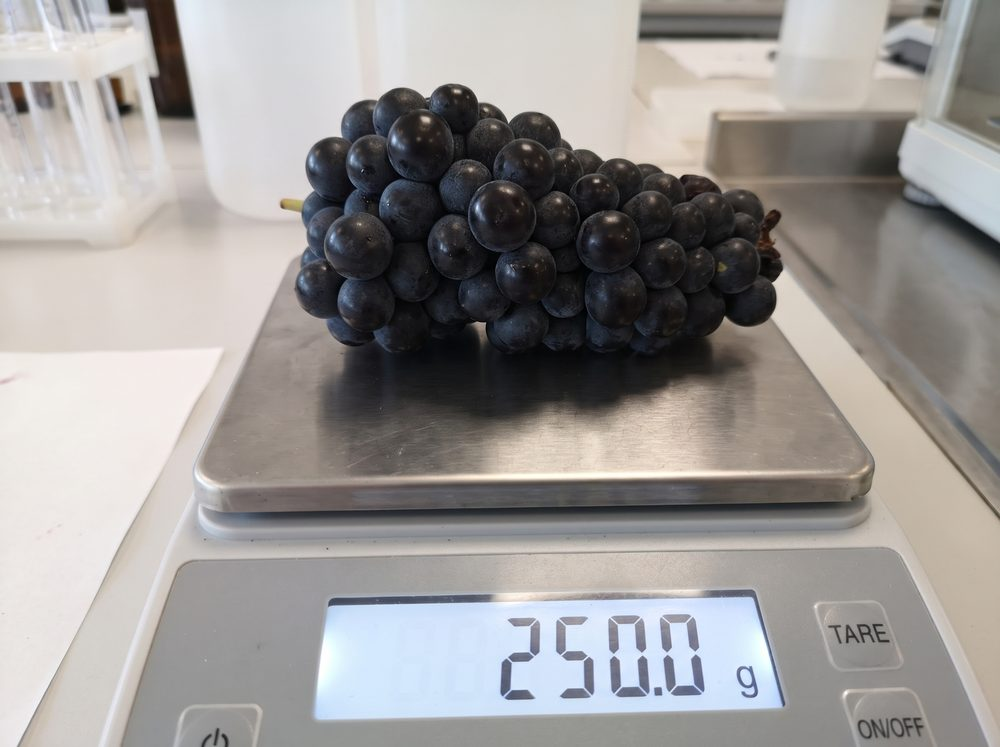
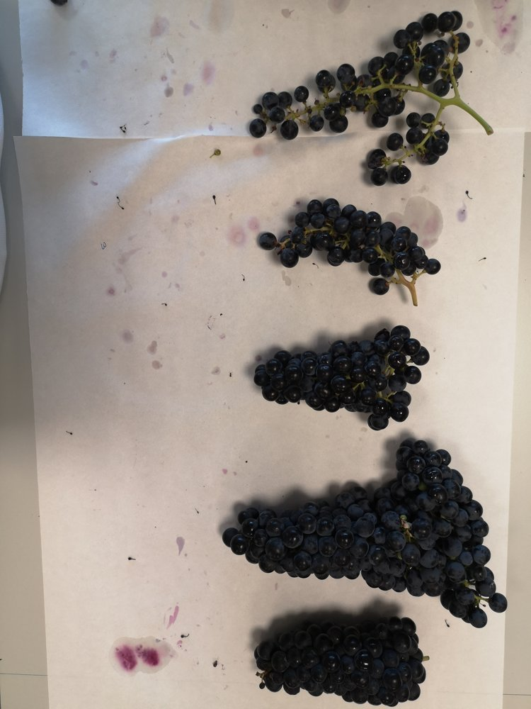
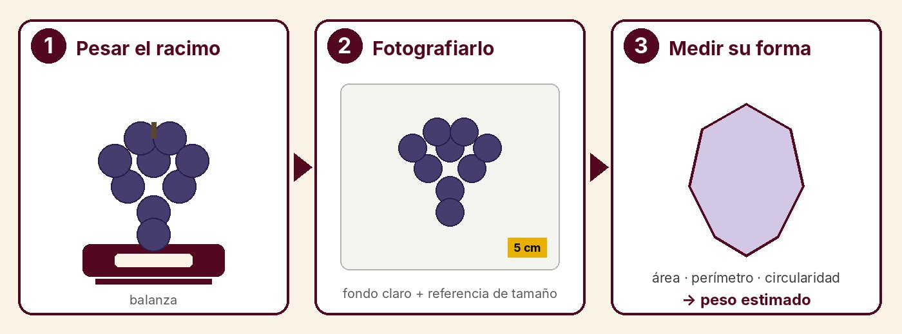

¿Cuánto pesa este racimo?
Un racimo, una foto y una pregunta: ¿cuántos gramos crees que pesa?
El problema
Contar racimos no basta para prever la cosecha: también importa cuánto pesa cada uno. Pesarlos a mano es lento y obliga a cortar el racimo.
Lo que dice la investigación
Un estudio analizó imágenes de 359 racimos de Cabernet-Sauvignon con distintos riegos y extrajo 13 medidas de forma. Con un modelo de regresión por pasos, el área, el perímetro y la circularidad predijeron el peso (R² ajustado = 0,824), con desviaciones en los racimos más grandes (Poblete-Echeverría et al., 2025a).


De la foto al peso
El método fotografía cada racimo sobre un fondo claro con una referencia de tamaño conocido, mide su silueta (área, perímetro, circularidad…) con un programa y la relaciona con el peso real del racimo en una balanza (Poblete-Echeverría et al., 2025a).

Así será el juego
Verás un racimo, estimarás su peso y lo compararás con el real.
Para saber más
- Poblete-Echeverría, C., Berry, A., Venter, T., Velez, S., Gonzalez Pavez, M. I. e Íñiguez, R. (2025a). Morphological image analysis for estimating grape bunch weight under different irrigation regimes in Cabernet-Sauvignon. OENO One, 59(2). doi:10.20870/oeno-one.2025.59.2.9309